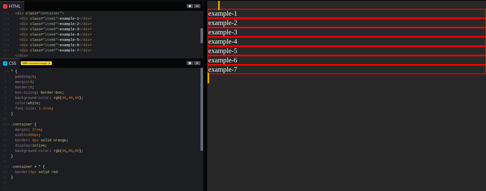
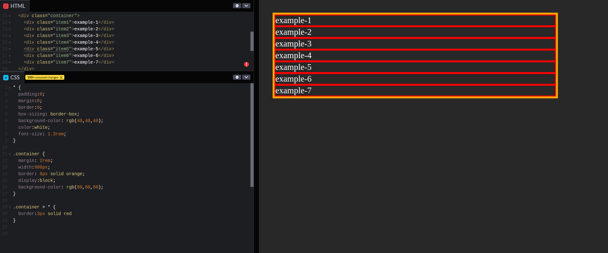
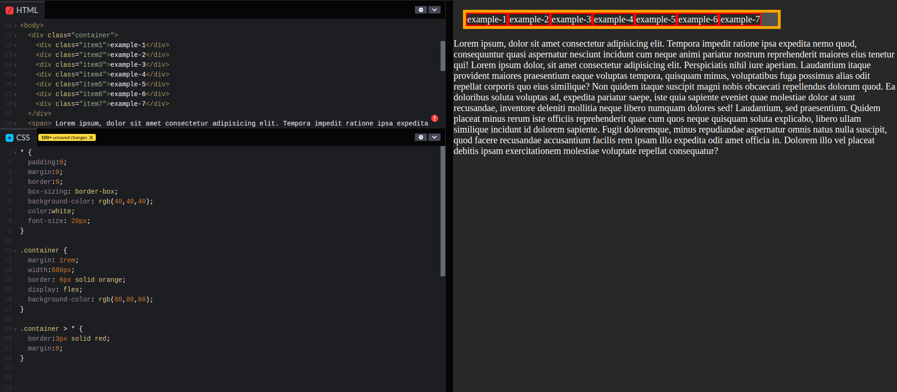
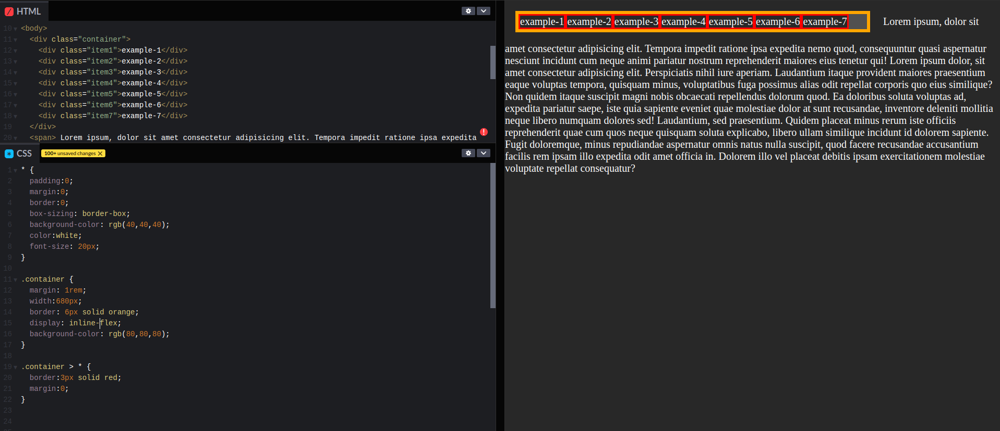
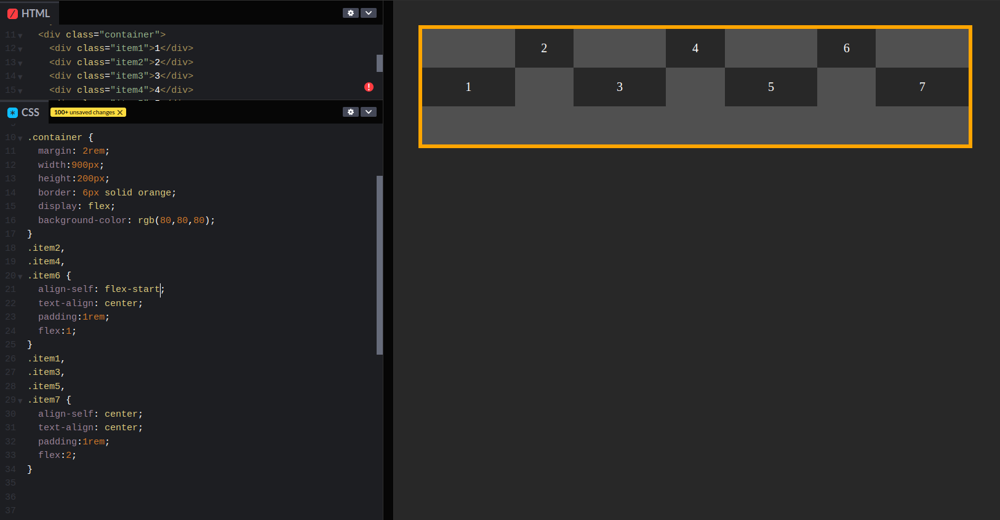
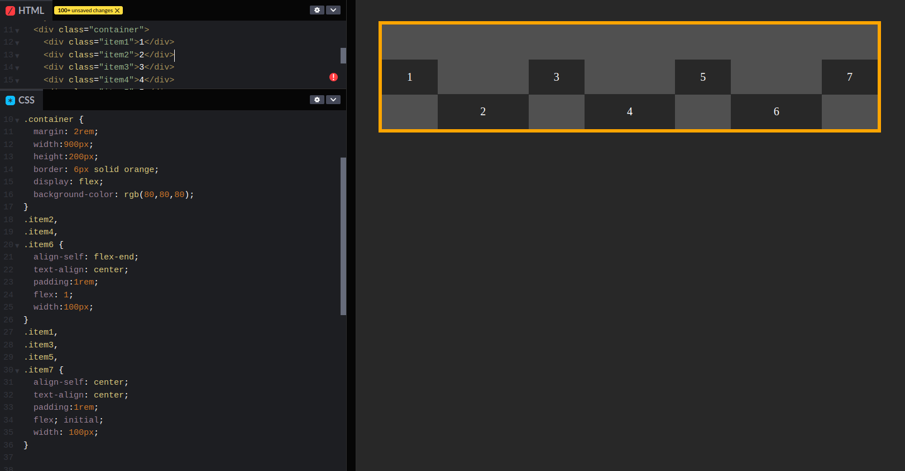

This is a layout mode that offers an alternative to floats for defining the overall appearance of a web page. Whereas floats only let us horizontally position our boxes, flexbox gives us complete control over the aligment, direction, order, and size of our boxes.
You can change the inner display type for example by setting display:flex, the element will still use the outer display type block but this changes the inner display type to flex. Any direct children of this box will become flex items and behave according to the flexbox specification.
In general, you can set various values for the display type using the display property, which can have various values:
The box will break onto a new line:
The box will not break onto a new line:
The box will not break onto a new line, by giving it a value of flex, we are telling the browser that everything in the box should be rendered with flexbox instead of the default box model:
The is no effects on flex items container, it's the same as display:flex but the difference is the block container is considered inline-level now. You cannot display flex items inline; otherwise you don't actually have a flex layout. :
The flex property defines the width of individual items in a flex containet, it allows them to have flexible widths. It works as a weight that tells the flex container how to distribute extra space to each item. For example, an item with a flex value of 2 will grow twice as fast as items with the default value of 1.
We can even mix-and-match flexible boxes with fixed-width ones. flex: initial falss back to the item's explicit width property. This let us combine Static and flexible boxes in complex ways.
Without that flex:initial line, the flex: 1; declaration would be inherited from the .footer-item rule, causing the width properties to be ignored. initial fixes this, and we get a flexible layout that also contains fixed-width items.